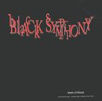

| Artist: | Black Symphony |
| Title: | Tears Of Blood |
| Label: | Rising Sun/Rock Inc. |
| Length(s): | 55 minutes |
| Year(s) of release: | 2001 |
| Month of review: | [12/2001] |
| 1) | Tears Of Blood | 4.50 |
| 2) | It Remains A Mystery | 3.07 |
| 3) | Take Me Down | 3.46 |
| 4) | I Am Hate | 3.44 |
| 5) | Death | 7.02 |
| 6) | Burned | 4.14 |
| 7) | Over And Over | 3.56 |
| 8) | Tears Of Blood (part Ii) | 3.13 |
| 9) | Forgive Me | 4.58 |
| 10) | Left In Confusion | 2.44 |
| 11) | Into The Dark | 6.01 |
| 12) | The Black Symphony (part Ii) | 8.01 |
Take Me Down is more catchy, but with sinister verses. This track has a likeness to old school Gothic, the catchiness turns into atmospheric along the way. I Am Hate however, is more rocky, more hard-edged and tends to industrial oriented rock.
Lots of atmosphere, a folky one at that, we find on Death. The song starts of rather calmly, but later the rhythm guitar gives the song a bit more drive. Plodding metal we find on Burned, but do not ignore this song lightly, because it is a good one in which the metal parts are alternated with calm melodious vocals. The vocals are a bit in the style of Chris Cornell (Soundgarden).
On Over And Over we hear more rock, but also playfulness with somewhat high vocals. Tears Of Blood (part II) continues the combination of metal and melody in a good way, with quietere passages in between the heavy ones.
Forgive Me opens with sitar and swollen vocals, the singing in the chorus is much rowdier. The vocals get to be even more rougher later on, the keyboards tend to be classically oriented. Left In Confusion is more speed and more metal.
Into The Dark and closer The Black Symphony (Part II) are more epic pieces. The former of these opens in sinister fashion with lots of keyboards. The vocals are varied and there is some choir vocal singing as well. The song has a bit of a Faith No More feel. The music is not that complex, but there is really a loy of variation both in vocals, tempo and melody. This is a song that ought to appeal strongly to proglovers.
The final track then opening with piano and guitar. A strong feel of menace pervades the music when the drums set in. It is one of the few tracks with a long guitar solo, which is striking (and admirable in) a metal oriented record.
Although my version did not include it, I was told there is a bonus cd version including four cover songs (the Who, Queensryche, Deep Purple and Black Sabbath).